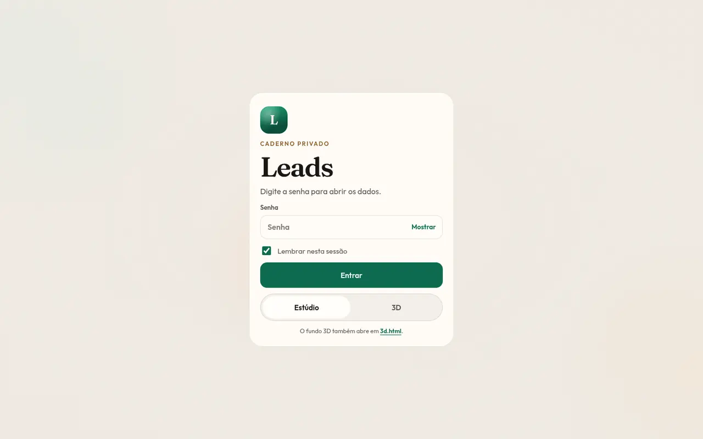
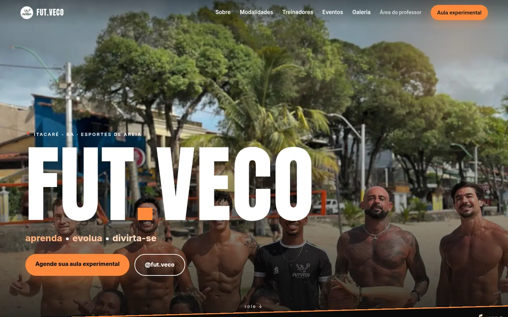
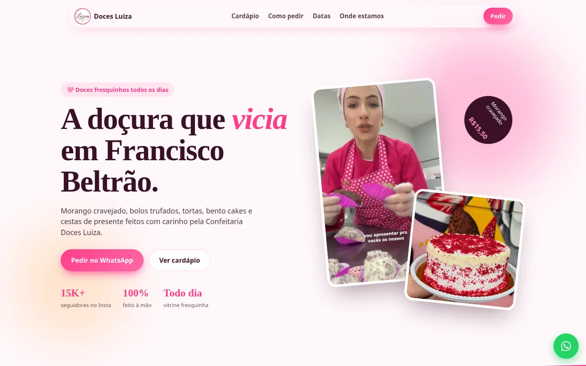
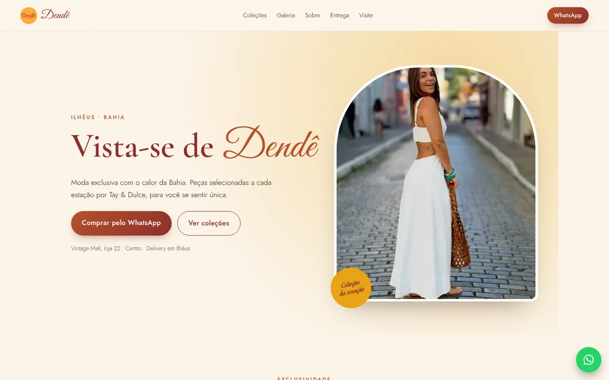
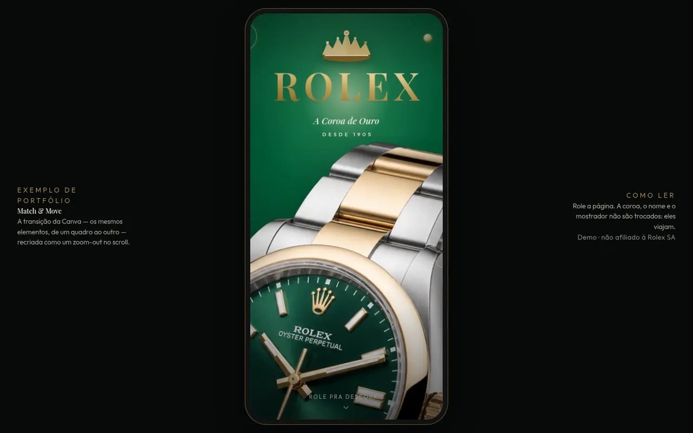

Eight live projects. The screenshots are the public pages as they load. The sites themselves are in Portuguese, because the businesses are. Two of them, the virtual office and the leads app, stop at a password. The work behind that door is private.
 Open the official Blue Ocean Flats site (opens in a new tab)
Open the official Blue Ocean Flats site (opens in a new tab)
01 · Client site · Itacaré
Blue Ocean Flats
Official website for a boutique guesthouse on Praia da Concha, in Itacaré. The page covers the house and six flat types with photo galleries: Double, Master, Master Família, Master Luxo Família, Twin, and Delux. It also covers breakfast, the in-house spa, amenities, a photo carousel, a reviews block that cites Expedia and Kayak, the location, and WhatsApp booking. Deployed on Hostinger. A copy of the same site is on GitHub Pages, and the content is updated when the client asks.
blueoceanflats.com (opens in a new tab)
GitHub Pages copy (opens in a new tab)
 Open O Escritório (opens in a new tab)
Open O Escritório (opens in a new tab)
Public page: password required. The office itself is private.
02 · Personal system
O Escritório
An isometric pixel-art office: a Habbo-like building, drawn as original art, not Habbo or Sulake assets. The public page asks for one password, the same on a phone and a computer. Behind it, the building has a reception, a pantry, an open office, a meeting room, a project room, an archive, and a room for Kauan. His AI agents can be given tasks from the desks. A meeting table can ask several agents the same question. Notes and results stay in an encrypted file.
kauan-gattward.github.io/escritorio-virtual (opens in a new tab)

Open the leads app (opens in a new tab)
Public page: password required. Lead data is not public.
03 · Lead outreach
Leads
A private notebook for lead outreach. The public page is a sign-in, with a Studio look or a light 3D background. Inside, each lead has call and WhatsApp (a message is prepared), a status, notes, a contact log, follow-ups with a Today view, a score, and filters. Leads can be added, and there is a JSON backup. The published lead file is encrypted in the browser. On a wide screen the app becomes a panel: the list on one side, the open lead on the other.
kauan-gattward.github.io/leads-landing-page (opens in a new tab)

Open the FUT.VECO site (opens in a new tab)
04 · Presentation site · Itacaré
FUT.VECO
Presentation site for a futevôlei and altinha school on the sand in Itacaré. The page introduces both games, the people who run the sessions, a short events list, an Instagram photo gallery, and a path to book an experimental class. The school’s line on the page is learn, improve, have fun.
kauan-gattward.github.io/futveco (opens in a new tab)

Open the Doces Luiza site (opens in a new tab)
05 · Landing page · Francisco Beltrão
Doces Luiza
Landing page for Confeitaria Doces Luiza, a sweets shop and café in Francisco Beltrão. The page has a hero, a short list of favorites, and a menu you can filter, with prices on the items. Ordering is a three-step WhatsApp path. There are blocks for seasonal dates, and the shop address in the center of the city is on the page.
kauan-gattward.github.io/docesluiza-landing (opens in a new tab)
 Open the Vida de Sereia site (opens in a new tab)
Open the Vida de Sereia site (opens in a new tab)
06 · Landing page · Itacaré
Vida de Sereia
Landing page for a natural tanning oil from Itacaré. It tells the beach story, shows the product, and prints the price the brand published (R$ 25), with a note to confirm it because prices can change. A how-to, a photo gallery, and a question list sit further down. Order buttons copy a ready message for Instagram Direct.
kauan-gattward.github.io/vidadesereia (opens in a new tab)

Open the Boutique Dendê site (opens in a new tab)
07 · Landing page · Ilhéus
Boutique Dendê
Landing page for a clothing boutique in Ilhéus run by Tay and Dulce. The page shows seasonal edits (summer, resort, and occasion wear), a gallery, a short story of the shop, and delivery in Ilhéus arranged by WhatsApp. The store is listed at Vintage Mall, shop 22, downtown.
kauan-gattward.github.io/boutique-dende (opens in a new tab)

Open the Rolex Match and Move demo (opens in a new tab)
08 · Motion demo · not a client
Rolex Match & Move
A mobile scroll demo, unaffiliated with Rolex SA. It is a portfolio piece, separate from any client work. It rebuilds a Canva match-and-move transition: the crown and the word ROLEX start large over a close-up of the dial. On scroll, those same pieces travel outward, the full watch settles in the center, the word OYSTER grows behind it, and the line “A precisão que permanece” comes in. The same pieces travel from the first frame to the last.
kauan-gattward.github.io/rolex-match-move-demo (opens in a new tab)